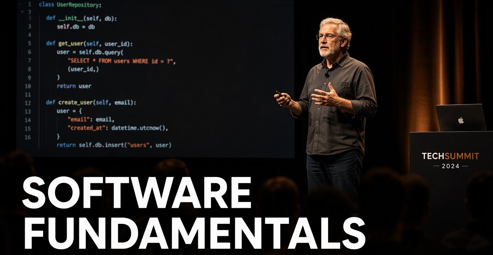

YouTube1:02:31本次学习比较了顺光与侧光。保持主体和相机的位置不变，更容易辨认光源带来的差异；侧光会在物体转折处形成明暗对比，因此轮廓更容易被观察到。练习时固定相机、只移动灯的位置，是理解光比的最快方式。
先保持相机和人物的位置不变。
笔记解释从侧面照过来，物体的轮廓就更清楚了。侧面照明会在物体转折处形成明暗对比，因此轮廓更容易被观察到。
侧光下，受光面与背光面的亮度差形成“光比”。光比越大，轮廓线越清晰，这也是伦勃朗光的基础。
再观察阴影边缘的变化。
逆光让物体的轮廓更加清晰，可以比较同一场景在不同时间段的变化。
只移动灯的位置，再比较照片。
练习时固定相机，只移动灯的位置。
使用受邀邮箱接收验证码，无需密码。
粘贴一个课程或网页链接，开始整理学习库。
按平台管理字幕抓取、语音转写和启用状态，插件会实时遵循这里的设置。
验证码已发送至 name@example.com，10 分钟内有效。
粘贴一个课程或网页链接，开始整理你的学习库。浏览器插件可以在任何页面一键收藏。
收藏第一条资料将同时删除该资料的逐字稿、笔记与课程总结，此操作不可撤销。